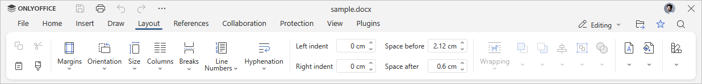
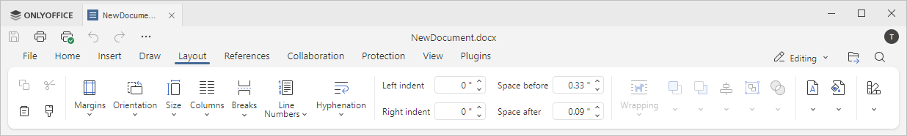

Kartica Izgled
Kartica Izgled u Uređivaču dokumenata omogućava promenu izgleda dokumenta: podešavanje parametara stranice i definisanje rasporeda vizuelnih elemenata.
Odgovarajući prozor u Online Uređivaču dokumenata:

Odgovarajući prozor u Desktop Uređivaču dokumenata:

Pomoću ove kartice možete:
- podesiti margine stranice, orijentaciju i veličinu,
- dodati kolone,
- ubaciti prelome stranica, prelome sekcija i prelome kolona,
- ubaciti brojeve redova,
- automatski prekidati reči (vezivanje),
- poravnati i rasporediti objekte (tabele, slike, grafikone, oblike),
- promeniti stil omotavanja teksta i urediti granice omotavanja,
- dodati vodeni žig,
- promeniti boju pozadine stranice,
- promeniti šemu boja.